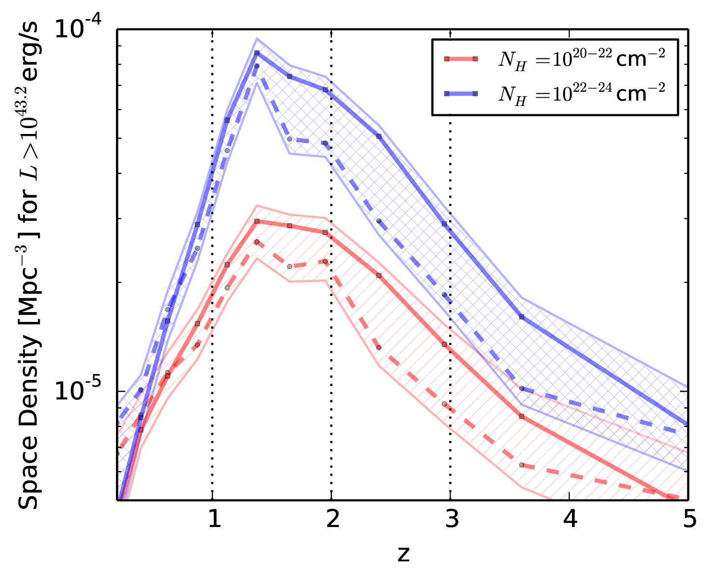
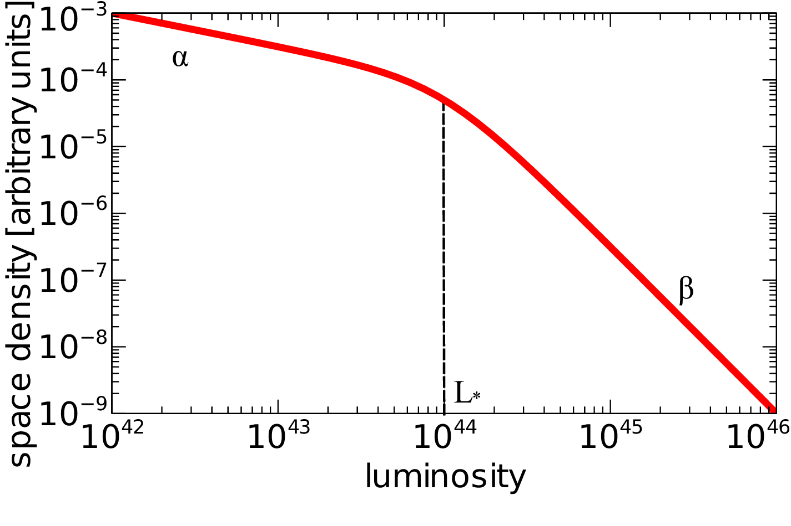

Hidden Accretion onto Supermassive Black Holes
Revealed
X-ray AGN Workshop / Apr 2014
Johannes Buchner
MPE :: High-Energy :: AGN
in collaboration with A. Georgakakis, K. Nandra, Li-Ting Hsu, Sotiria Fotopoulou, Marie-Luise Menzel, C. Rangel, M. Brightman, A. Merloni and M. Salvato
Overview
- Active Galactic Nuclei (AGN) in X-ray
- Obscuration effects
- Research question
- Approach & Data
- Visualisations
- Models for the obscurer
X-ray effects
Emittors, Detectors, Telescope location
X-ray spectrum of AGN
- Powerlaw - Luminosity $L$
- Absorption - Column density $N_H$
- Squeezing - Redshift $z$
- Soft scattering component
- Compton scattering - Covering $R$
 Buchner+2014
Buchner+2014
Research Question
- Relationship accretion - obscuration ($L_X$ - $N_H$)
- Cosmic evolution, Co-evolution with galaxies?
$\Rightarrow$ Investigate distribution of population
in luminosity, redshift and $N_H$
- What fraction are obscured $N_H>{10}^{22} \text{cm}^{-2}$?
- What fraction are Compton-thick $N_H>{10}^{24} \text{cm}^{-2}$?
- Does the obscurer "react" to the luminosity?
Survey fields
Data
Side-note: X-ray spectra
- $\phi = k / t$ ?
- $k \sim \text{Poisson}(\phi \cdot t \cdot \text{bias})$
- $\rightarrow$ find all $\phi$ that could produce $k$ counts
- $\rightarrow$ Find all $L_X$, $z$, $N_H$ which could produce $k$ (spectrum)
Data
$z=0.5-3$, $L_X={10}^{42-46} \text{erg/s}$What is the distribution of the population?
Luminosity function
- $\phi = k / V$ ?
- $k \sim \text{Poisson}(\phi \cdot t \cdot \text{bias})$
- $\rightarrow$ find all $\phi$ that could produce $k$ detected objects
- Bias against faint, obscured, high-z
- Can use smoothness between bins
- Uncertainty which bin
Model
- "Fit a 3d histogram"
- Smooth density function
- "Debiased"

Total luminosity function
Density evolution
 $\int \phi dL$Obscured: ${{76}^{+4}_{-5}\%}$, Compton-thick: ${36}^{+8}_{-8}\%$
Luminosity density
$$\int L \times \phi dL$$Accretion happens mostly in obscured AGN (75%)
Accretion relics
- $L_{bol} = \epsilon \cdot \dot{M}$ (Thermal equilibrium of accretion disk)
- $\epsilon = 0.1$ (non-rotating BH: 0.06, rotating BH: 0.4)
- $L_{bol} = 40 \times L_X$ (Elvis+99, first order)
$$\Rightarrow \dot{M}(L) = 40 \times L_X / \epsilon$$ The luminosity output of the AGN population indicates how much mass is being trapped into black holes (Soltan argument)
Accretion relics

Obscuration - Luminosity
Models

Evolutionary model
More realistic picture of AGN
Conclusions
- Sample of 2000 AGN analysed for X-ray properties $L$, $z$, $N_H$
- luminosity function determined $\phi(L, z, N_H)$
- fraction $N_H>10^{22} \text{cm}^{-2}$: 75% (45°)
- fraction $N_H>10^{24} \text{cm}^{-2}$: 35% (20°)
- The accretion in obscured AGN can explain local black hole mass density
- Obscured fraction is luminosity dependent
- Relationship evolves
- why? $\rightarrow$ need more research
- parametric model